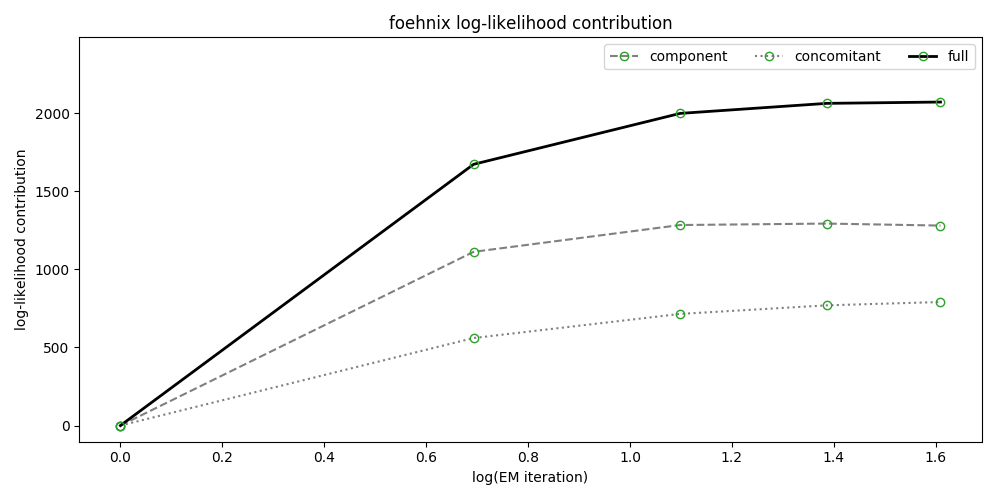
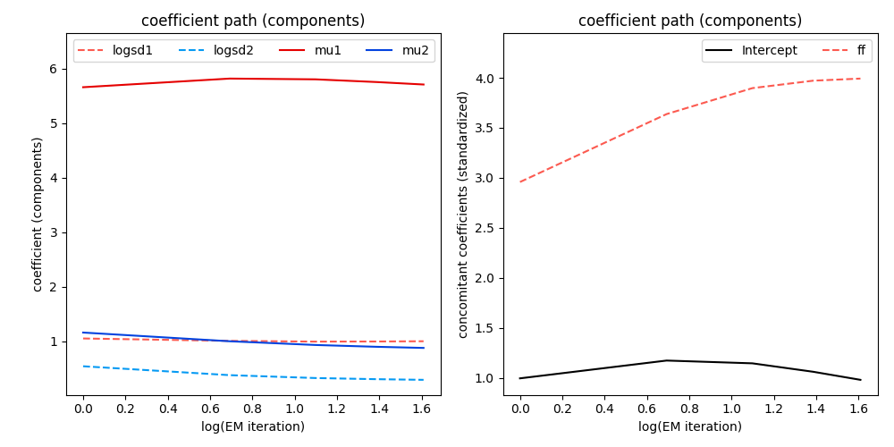
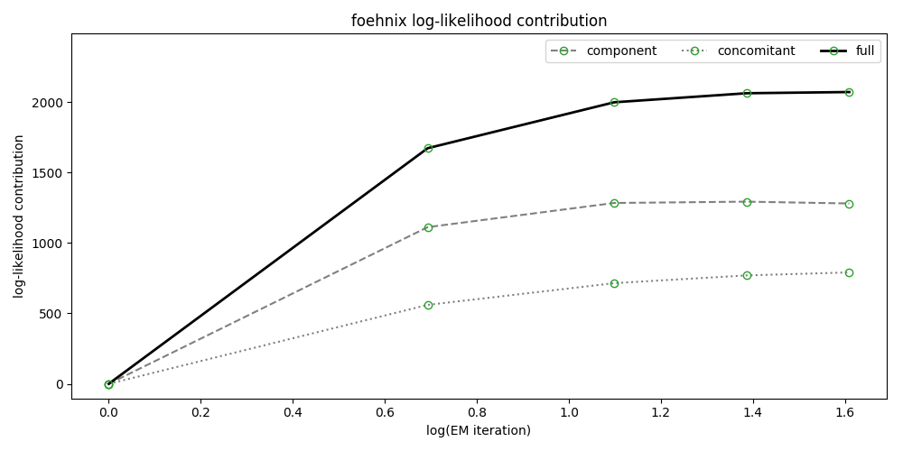
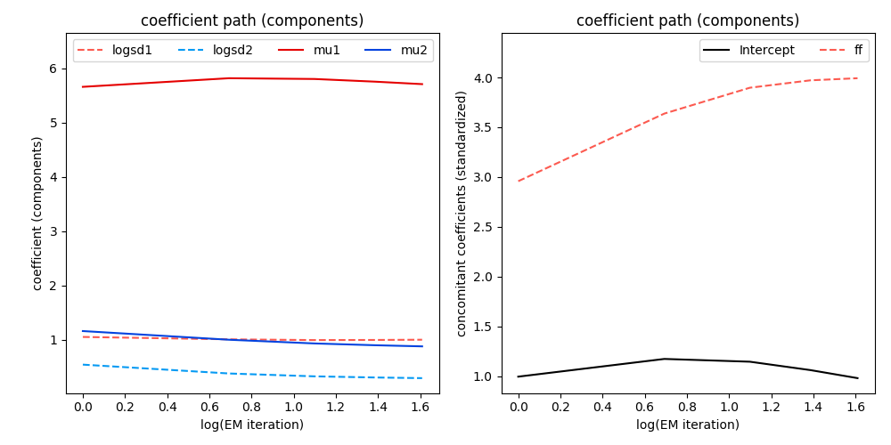

Getting started¶
Foehnix and Pandas
In [1]: import foehnix
In [2]: import pandas as pd
Load Ellboegen and Sattelberg data, merge and create filter
In [3]: ellboegen = pd.read_csv('../data/ellboegen.csv', delimiter=';', skipinitialspace=True)
In [4]: sattelberg = pd.read_csv('../data/sattelberg.csv', delimiter=';', skipinitialspace=True)
In [5]: ellboegen.head()
Out[5]:
timestamp dd ff p rh t
0 1263805200 338.0 1.2 899.8 75.0 -0.9
1 1263808800 18.0 0.1 899.9 66.0 0.2
2 1263812400 344.0 0.8 899.1 63.0 0.7
3 1263816000 303.0 2.4 898.8 60.0 0.7
4 1263819600 292.0 2.8 898.5 57.0 1.9
In [6]: data = pd.merge(ellboegen, sattelberg, on='timestamp', how='outer', suffixes=('', '_crest'), sort=True)
In [7]: data.index = pd.to_datetime(data.timestamp, unit='s')
In [8]: train = data.iloc[:-10].copy()
In [9]: test = data.iloc[-10:].copy()
In [10]: train['diff_t'] = train['t_crest'] + 10.27 - train['t']
In [11]: ddfilter = {'dd': [43, 223], 'dd_crest': [90, 270]}
Run the model and show a summary
In [12]: model = foehnix.Foehnix('diff_t', train, concomitant='ff', filter_method=ddfilter, switch=True, verbose=True)
In [13]: model.summary()
Number of observations (total) 71346
Removed due to missing values 10187 (14.3 percent)
Outside defined wind sector 43539 (61.0 percent)
Used for classification 17620 (24.7 percent)
Climatological foehn occurance 13.38 percent (on n = 61159)
Mean foehn probability 13.23 percent (on n = 61159)
Log-likelihood: -40634.7, 6 effective degrees of freedom
Corresponding AIC = 81281.3, BIC = 81328.0
Number of EM iterations 10/100 (converged)
Time required for model estimation: 0.8 seconds
Plot some model assessments
In [14]: model.plot('loglik', log=False)
In [15]: model.plot('loglikcontribution', log=True)
In [16]: model.plot('coef', log=True)
 


